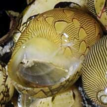
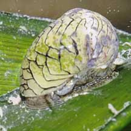
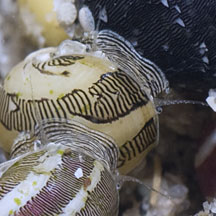
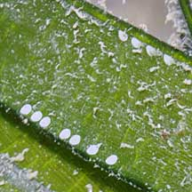
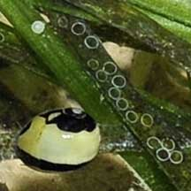
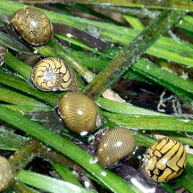
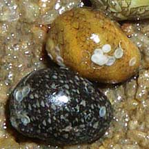
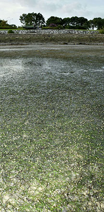
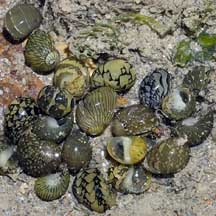
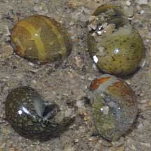

|
|
| shelled snails text index | photo index |
| Phylum Mollusca > Class Gastropoda > Family Neritidae |
| Dubious
nerite snail Clithon oualaniensis Family Neritidae updated Jul 2020 Where seen? This tiny snail is sometimes seen in large numbers on sandy shores near monsoon drains and other sources of freshwater on some of our shores, sometimes among seagrasses and seaweeds. It seems to prefer the upper reaches of monsoon drains leading to the sea or slow-moving, sheltered, shallow waters. Also seen in silty lagoons. The study by Tan & Clements (2008) found this snail on sandy banks of mangrove streams, on sand in drains and canals, intertidal muddy sand banks, and on mud in mangroves. Sites included: Sarimbun, Punggol, Pulau Ubin, Pasir Ris, Sungei Changi, Changi, Tanah Merah, Sungei Bedok, Marina East, Kallang and Tuas. Features: 0.3-0.5cm. Shell thin spherical with a large semi-circular shell opening. Shell smooth glossy. Shell pattern yellow or olive background with delicate black lines in various designs; from simple lines to more complex patterns. It is said no two shells are identical. Operculum thin smooth horn-like material usually greyish. Body pale with fine black stripes, and long slender tentacles. |
 Thin greyish operculum. Tanah Merah, May 09 |
 Striped body with long tentacles. Tanah Merah, Oct 10 |
 Striped body with long tentacles. Tanah Merah, Dec 11 |
| Dubious babies: The Dubious nerite lays white circular egg capsules that are miniature versions of other Nerite egg capsules. Each egg capsule contains many eggs. These hatch into free-swimming larvae that only later settle down to develop into snails. |
 Egg cases laid on seagrass. Tanah Merah, Oct 10  Egg cases laid on seagrass, already hatched. East Coast, Dec 08 |
 Marina East, De 25 Photo shared by Loh Kok Sheng on facebook.  Egg cases laid on one another! Sentosa, Apr 09 |
 Countless snails on Needle seagrass. Marina East, De 25 Photo shared by Loh Kok Sheng on facebook. |
| What does it eat? This tiny snail
grazes on algae. Status and threats: This beautiful snail is listed as 'Vulnerable' on the Red List of threatened animals of Singapore. According to the Singapore Red Data Book: "Populations along the original shores have been wiped out by reclamation." |
| Dubious nerite snails on Singapore shores |
On wildsingapore
flickr
|
| Other sightings on Singapore shores |
 Tuas, Nov 06 |
 Pulau Sudong, Dec 09 |
Links
|